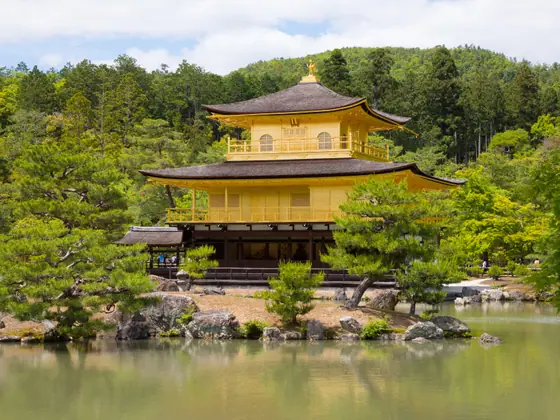
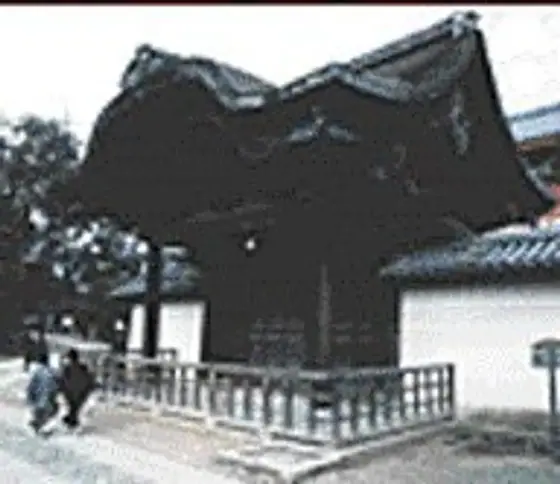
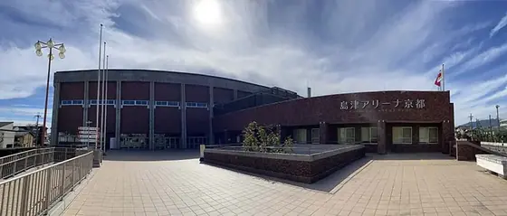
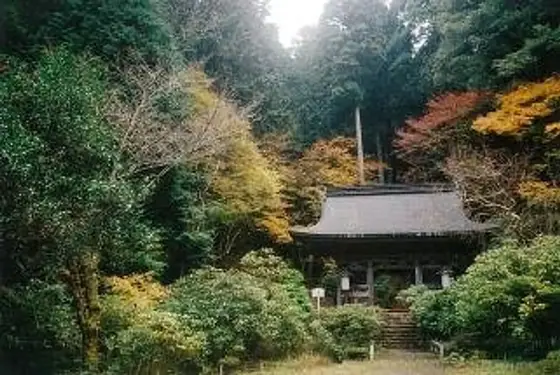

Kyoto, Kyoto: things to do, food and stays
Kyoto · Kyoto
Kyoto
Highlighted on the Kyoto map.

Sights

Shimazu Ariina Kyoto (Kyoto Furitsu Gym)



Kokutei Historic Site (Raizan Yo Shosai Sanshi Suimei Tokoro)
Tsuchii Kokorozashi Ba Shi Honpo (Kokorozashi Ba Shi Village)
Izutsu Hachi Tsu Hashimoto Ho Kyogoku Ichiban Machi - Minami Nishikikoji -
Jinushi Shrine (Shaden Shufuku Kojichu no Tame Heimon Shiteimasu)
Sugimoto Ie House (Genzai, Oya Ne Kojichu no Tame Kokaiseigen Garu Bai Garimasu)
Saga Bijutsudai Gaku Saga Bijutsu Tankidaigaku Fuzoku Museum
Ryotokuji (12 Gatsu no Daikon Taki Ha Tomen Chushi Tonarimasu)
Kyosera Gyararii Kyosera Fainseramikku Kan Inamori Raiburarii
Kyoto Nambu Kuriin Center Kankyo Gakushu Shisetsu Sasutena Kyoto